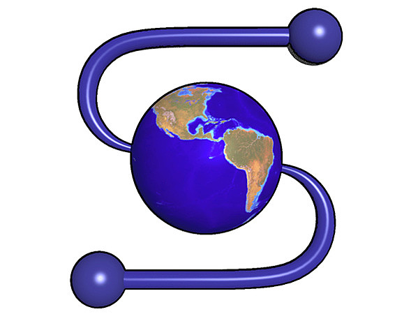
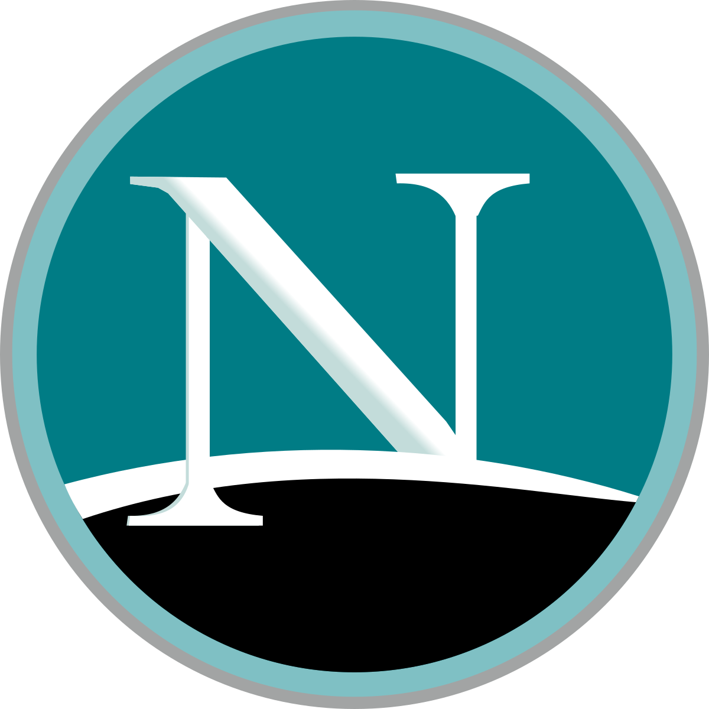
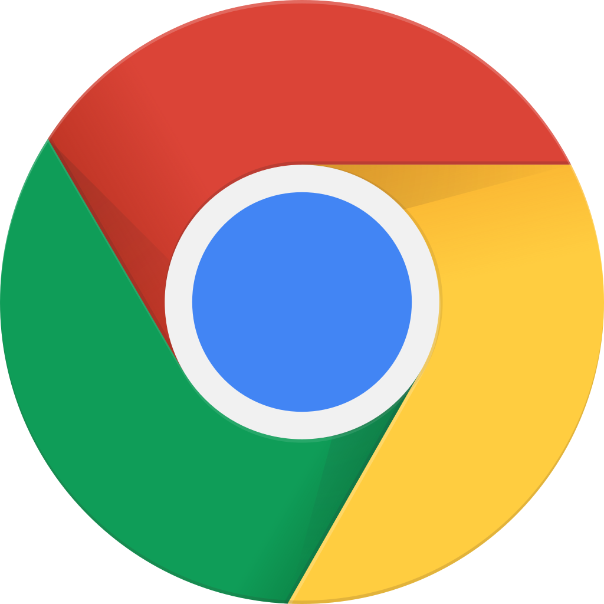

Programação de aplicativos para internet
Bem-Vindos a minha página HTML
Durante as aulas de Programação de aplicativos para internet vamos aprender a desenvolver aplicações para Internet utilizando técnicas de HTML, CSS e ASP.NET

Mosaic - Foi o primeiro navegador a rodar no Windows,
fator determinante para a abertura da web para o público em geral. Marc Andreessen, o líder do time que
desenvolveu o Mosaic, saiu da NCSA e, com Jim Clark, um dos fundadores da Silicon Graphics, Inc. (SGI)
e outros quatro estudantes formados e nomeados da Universidade de Illinois, iniciaram o Mosaic
Communications Corporation. Mosaic Communications finalmente se tornou a Netscape
Communications Corporation, produzindo o Netscape Navigator

Netscape - O Netscape trouxe todas as características
que um browser moderno oferece nos dias de hoje, como por exemplo a navegação por abas,
o bloqueio de pop ups, suporte a cookies e histórico de visitas, entre outros. Reinou absoluto
durante anos, mas já em 2002 seus usuários se resumiam a alguns poucos gatos pingados.
Um dos motivos foi o fato da Microsoft passar a incluir, já em 1995, o Internet Explorer junto com
o sistema operacional Windows.

Chrome - Depois de muita especulação, o Google finalmente
se lança no mercado de navegadores em setembro do ano passado com o Chrome, um navegador 'projetado do
zero' e com a promessa de ser mais rápido, seguro e estável que os concorrentes.